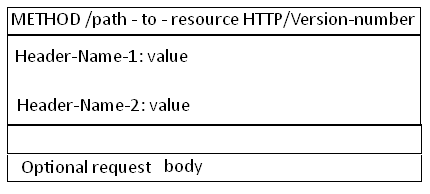

1.背景介绍
2.知识剖析
3.常见问题
4.解决方案
5.编码实战
6.扩展思考
7.参考文献
8.更多讨论

协议是指计算机通信网络中两台计算机之间进行通信所必须共同遵守的规定或规则，超文本传输协议(HTTP)是一种通信协议，它允许将超文本标记语言(HTML)文档从Web服务器传送到客户端的浏览器
HTTP协议的主要特点
1.支持客户/服务器模式。
2.简单快速：客户向服务器请求服务时，只需传送请求方法和路径。
3.灵活：HTTP允许传输任意类型的数据对象。
4.无连接：无连接的含义是限制每次连接只处理一个请求。服务器处理完客户的请求，并收到客户的应答后，即断开连接。
5.无状态：HTTP协议是无状态协议。无状态是指协议对于事务处理没有记忆能力。
一个http请求的过程是什么样子的？
URL中的各个部分分别代表什么含义？
http的消息结构是什么样子的？
URL详解
schema://host[:port#]/path/.../[;url-params][?query-string][#anchor]
scheme 指定低层使用的协议(例如：http, https, ftp)
host HTTP服务器的IP地址或者域名
port# HTTP服务器的默认端口是80
path 访问资源的路径
url-params query-string 发送给http服务器的数据
anchor- 锚 代表网页中的一个位置。其右面的字符，就是该位置的标识符
http消息结构
Request 消息分为3部分，第一部分叫请求行， 第二部分叫http header, 第三部分是body. header和body之间有个空行， 结构如下图

HTTP/version-number表示HTTP协议的版本号， status-code 和message
HTTP Request header
Cache 头域
Client 头域
Cookie/Login 头域
Entity头域
Miscellaneous 头域
Transport 头域
第三部分是body